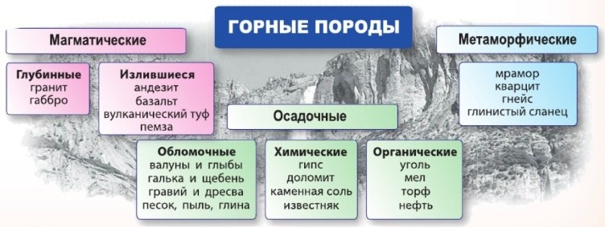
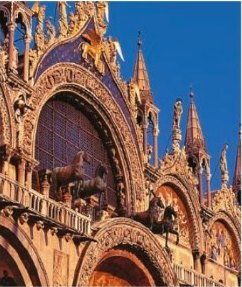

Что мы знаем о горных породах?
Рассмотри кусочек гранита. В нём часто видны светлые, сероватые и тёмные зёрна. В одном камне могут быть кварц, полевой шпат и слюда.
Гранит — горная порода, а кварц — один из её минералов. Кварц можно найти и отдельно. Кварцит, например, почти весь состоит из кварца.
Породы легко различить на ощупь. Песок рассыпается, гранит держится цельным куском, а влажной глине можно придать новую форму.
В начальной школе вы уже знакомились с горными породами и минералами. Галька и песок на берегу реки, уголь, мел, которым вы пишете на классной доске, — всё это горные породы. Они состоят из минералов. Минералы — природные образования, относительно однородные по химическому составу и свойствам. Например, если внимательно всмотреться в гранит, вы увидите, что он состоит из трёх разных минералов: кварца, полевого шпата и слюды.
Есть такие породы, которые состоят в основном из одного минерала (например, кварцит — из кварца). А есть и такие минералы, которые могут входить в состав горных пород и встречаться отдельно. Именно таков кварц.
Горные породы различаются своими свойствами. Например, они могут быть сыпучими (песок), плотными и монолитными (гранит), пластичными (глина).
Горные породы различаются и по своему происхождению. Учёные выделяют три группы горных пород по этому признаку: магматические, осадочные и метаморфические (рис. 53).
Горные породы слагают земную кору и состоят из одного или нескольких минералов.
Горные породы и минералы слагают земную кору. Породы различаются по составу, свойствам и происхождению.
1. У тебя один красивый кристалл кварца и кусочек гранита. Где один минерал, а где вместе несколько?
2. Можно ли вылепить одинаковый шарик из сухого песка и влажной глины?
Как образуются и какие бывают горные породы?
У гранита, ракушечника и мрамора три разные истории. Гранит застыл из расплава, ракушечник собран из остатков раковин, а мрамор когда-то был известняком.
Если магма застывает в глубине, получается магматическая порода, например гранит. Если лава остывает на поверхности, могут образоваться базальт или обсидиан.
Осадочные породы образуются из того, что накопилось на поверхности. Это могут быть обломки камней, соль, выпавшая из воды, или остатки растений и животных.
В глубине породы меняются от тепла и давления. Так образуются метаморфические породы. Из известняка получается мрамор, из гранита может получиться гнейс.
Магматические горные породы образуются из магмы. Если её расплавленная масса прорывает верхнюю часть мантии, внедряется в земную кору и застывает в толще земной коры, образуется глубинная горная порода, например гранит. При извержении вулкана расплавленная магма прорывается сквозь земную кору и изливается на поверхность в виде лавы, выделяя множество газов. Так образуются излившиеся магматические породы, например базальт, обсидиан (вулканическое стекло) и др. Магматические породы различаются между собой и по химическому составу, например по содержанию в породе кремния.
Осадочные горные породы образуются на земной поверхности в результате процессов разрушения, осаждения и последующего уплотнения. Среди осадочных пород выделяются три основные группы. Обломочные — результат разрушения скальных пород внешними силами Земли. Обломочные породы бывают разного происхождения (речные, ледниковые, морские и др.), а также подразделяются по размерам и форме частиц: от самых мелких у глины до крупнейших у валунов и глыб. Химические — результат осаждения солей в океанах и озёрах. Органические — результат накопления органических остатков. Например, в основе ракушечника — остатки мелких морских моллюсков, в основе каменного угля — остатки отмерших деревьев, росших на Земле в древние геологические эпохи.
И магматические, и осадочные породы в течение долгой геологической истории оказывались снова в глубине земной коры, где под действием высокого давления и высоких температур их свойства менялись. Образовывались новые породы — метаморфические (от греческого слова метаморфозис — превращение, полная перемена). Например, известняк превращался в мрамор, гранит — в гнейс.

▲ Найди гранит и базальт. Что у них общего и чем различается их происхождение?
Некоторые мраморные колонны собора Святого Марка в Венеции, по рассказу учебника, сделали больше 2,5 тысячи лет назад. В 1204 году их привезли из Константинополя. Возраст колонн считают со времени обработки камня. Мрамор образовался гораздо раньше.
Мраморным колоннам собора Святого Марка в Венеции уже более 2,5 тыс. лет (рис. 54). Они сделаны в V—IV вв. до н. э. из цельных кусков мрамора для храмов Древней Греции. После принятия христианства и разрушения языческих храмов они украшали византийские христианские церкви. В 1204 г., когда крестоносцы штурмом взяли Константинополь, эти колонны как часть огромной военной добычи перевезли в Венецию.

▲ Из какой породы сделаны колонны? Какая порода была исходной для мрамора?
Породы образуются под действием внутренних и внешних процессов и со временем могут превращаться в другие породы.
3. Гранит застыл глубоко, базальт — на поверхности. Почему они всё равно в одной группе?
4. Почему мраморная колонна не подскажет, сколько лет самому мрамору?
Что такое полезные ископаемые?
Из песка делают стекло. Из железной руды получают металл. Уголь сжигают, чтобы получить тепло. Всё это полезные ископаемые.
Топливные ископаемые нужны для получения энергии, рудные — для получения металлов. Соль, гранит и песок относятся к нерудным. Место, где в природе скопилось полезное ископаемое, называют месторождением.
Земная кора содержит огромное количество полезных для человека веществ, которые составляют минеральные ресурсы литосферы. Многие из них люди используют в хозяйстве. Их называют полезными ископаемыми. Скопление полезных ископаемых образует месторождение.
Различные металлы, твёрдое и жидкое топливо, природный газ, соль, строительные материалы и драгоценные камни, минеральные воды — всё это полезные ископаемые. Те из них, которые используют в качестве топлива, называют топливными или горючими; те, из которых выплавляют металлы, — рудными. Топливные полезные ископаемые чаще всего связаны с осадочными породами, а рудные — с магматическими и метаморфическими. Из нерудных полезных ископаемых наиболее известна поваренная соль, используемая человеком в пищу, в медицине и др. По запасам многих полезных ископаемых Россия занимает первое место в мире.
Нефть, газ, уголь, торф — топливные; железная руда и руды цветных металлов — рудные; гранит, мрамор, песок — нерудные.
Полезные ископаемые — часть богатств литосферы, которую люди используют.
5. Гранит и уголь добывают. Почему они попали в разные группы?
6. Можно ли назвать одно и то же вещество минералом и полезным ископаемым?
Итоги параграфа
- Из чего состоит земная кора?
- Горные породы, образовавшиеся из расплавленной магмы, называют: а) метаморфическими, б) магматическими, в) осадочными.
- Какие горные породы вы знаете? Что вы можете рассказать о них?
- Закончите предложение: «Полезные ископаемые — это…».
- Какие вы знаете полезные ископаемые?
- Какие утверждения верны? А. Процесс разрушения горных пород происходит только под воздействием внешних сил. Б. Смена температуры, действие воды, ветра разрушают горные породы. 1) Верно только А, 2) верно только Б, 3) оба верны, 4) оба неверны.
- Заполните таблицу «Как человек использует горные породы».
- Расскажите, как образовались горные породы (по выбору): а) осадочные, б) магматические, в) метаморфические. Подготовьте два вопроса о горных породах и задайте их соседу по парте.
| Горная порода | Использование людьми |
|---|---|
| Гранит | Пример: облицовка зданий |
| Песок | … |
| Мрамор | … |
- Соберите сведения о горных породах вашего края. Опишите, как люди в вашей местности их используют.
Проверь себя
Гранит
Магма застыла в глубине.
Ракушечник
Накопились остатки раковин.
Мрамор
Известняк изменился при нагреве и давлении.
Базальт
Лава застыла на поверхности.
Гнейс
Он может образоваться при изменении гранита.
1. Что в граните является минералом?
2. Что общего у гранита и базальта?
3. Как образовался ракушечник?
4. Какая порода может превратиться в мрамор?
5. Что относят к рудным ископаемым?
6. Как называют природное скопление полезного ископаемого?
Расскажи вслух
Гранит и кварц
- Назови, что здесь порода, а что минерал.
- Перечисли минералы гранита.
- Приведи пример породы, где преобладает один минерал.
Три пути образования пород
- Расскажи, как застывает расплав.
- Объясни, откуда берётся осадок.
- Назови пример превращения породы в глубине.
Где пригодится камень
- Назови породу.
- Объясни, к какой группе полезных ископаемых она относится.
- Приведи пример использования.
Что такое месторождение
- Дай определение.
- Приведи пример полезного ископаемого.
- Скажи, для чего это сырьё добывают.